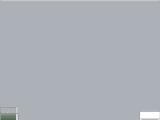
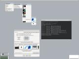
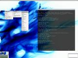
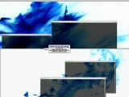
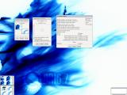
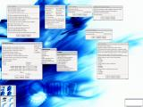
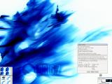
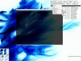
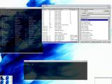
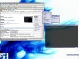

DR16 Screenshots
Several (41!) screenshots of DR16.7.1 as it looks out of the box without modification can be found at OSDir.com, thanks to Steve Mallett.
| Thumbnail | Description |
|  | This is what DR16.7 will look the first time you start it. |
|  | Adding new backgrounds to E is easy. Just copy them into .enlightenment/backgrounds and restart! You can create background submenus by simply creating a directory. Backgrounds can be accessed from the main "middle-click" menus of via the Desktop Background Settings dialog. |
|  | Editing menus is easy too. Each menu is a flat text file. The main "User Application List" menu is defined in .enlightenment/user_apps.menu. Just follow the format to edit and restart! |
|  | The bar at the top of your desktop (by default) is the desktop dragbar. You can drag windows between or look at two diffrent desktops by simply dragging the desktop down! You can also see a tooltip in this shot. Holding your cursor of some part of Enlightenment will present you with a tooltip summorizing how to use that componant, if you've enabled tooltips. |
|  | Both Virtual Desktops and Multiple Desktops are provided. Each is configured with its own settings dialog. You can even disable the desktop dragbar on the "Special FX" dialog to get it out of your way complete. |
|  | A wide variety of simple dialogs are avalible to customize E's behaviour to your exact preference, including Focus Settings, Move and Resize Settings, AutoRaise Settings, Window Placement settings, and more! |
|  | The Iconbox stores all windows when they are iconized. The Iconbox is highly configurable and can be tailored to your preference in function and style. |
|  | Each window can be hand crafted to meet your needs. Change stacking, border style, stick or unstick (follows you from virtual desktop to virtual desktop), or toggle the window skip list. You can even "remember" these settings for use by other windows of the same kind. This is very useful for "embedding" application into your desktop, such as GKRELLM. |
|  | Take full control of your desktop using our advanced tools, such as Eesh (the Enlightenment Shell) to interact directly with the window manager, and the optional e16keyedit which can be used to edit all Enlightenment keybindings and even add your own. In this shot I've just bound Control-Shift-F5 to open a new Eterm. |
|  | New themes can be quickly added. Simply download them, seen here from Freshmeat, and ensure that the theme is named theme_name.etheme (Freshmeat automatically renames them to tar.gz). Then copy the theme into .enlightenment/themes/ and restart E. Look in the Themes menu and you'll see it there, ready to be used! |
{kind=link}
{kind=link}
{kind=link}
{kind=link}
{kind=link}
{kind=link}
{kind=link}
{kind=link}
{kind=link}
{kind=link}